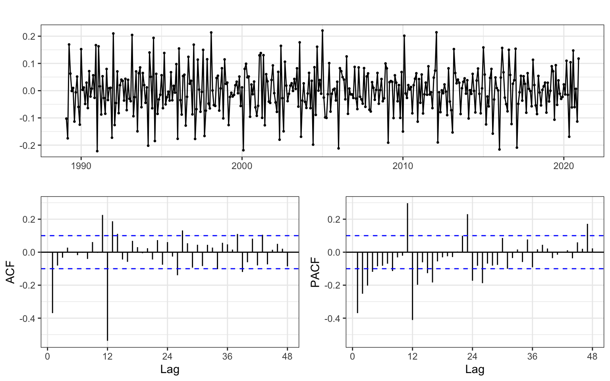
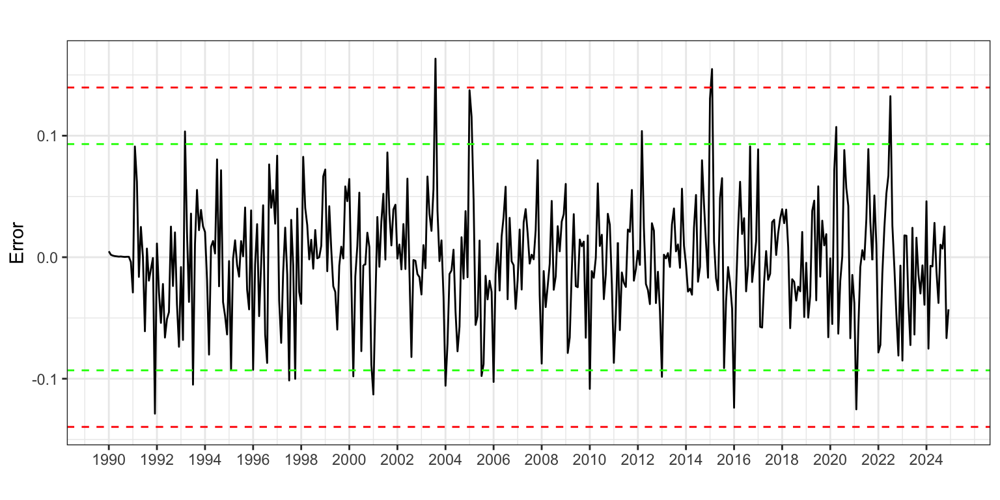
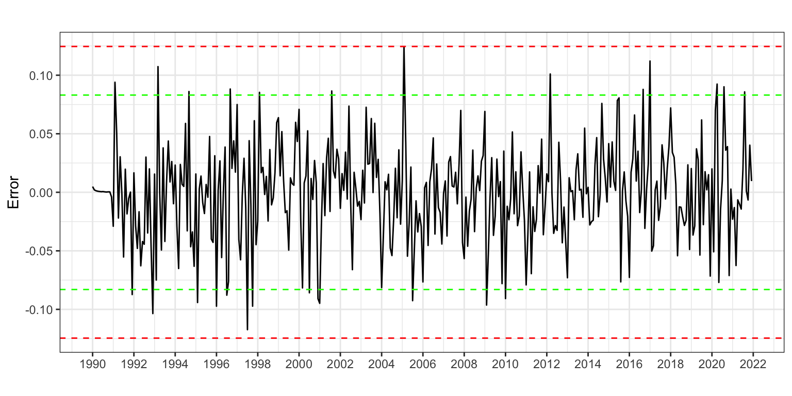
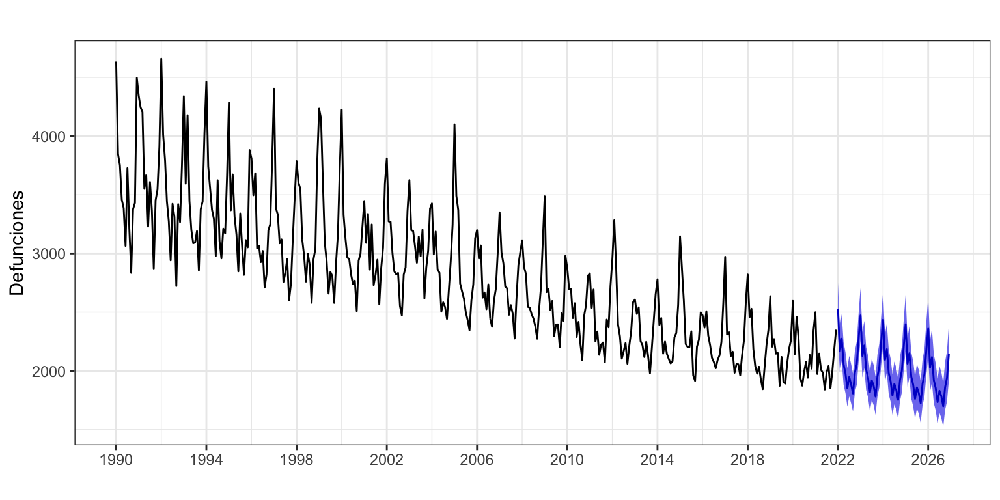
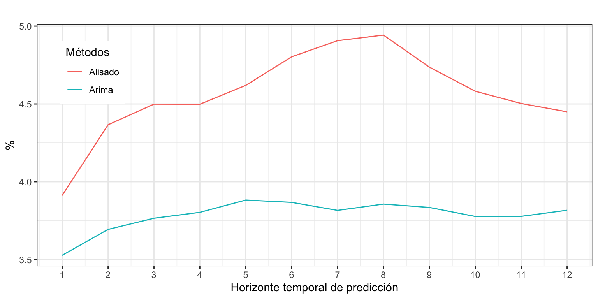

Defunciones por Enfermedades Cerebrovasculares
Procesos ARIMA con estacionalidad
1 Introducción
Consideremos de nuevo la serie temporal correspondiente al número de defunciones causadas por enfermedades cerebrovasculares, Esta serie está disponible en el Instituto Nacional de Estadística desde enero de 1980 hasta diciembre de 2020, un total de 41 años o 492 meses
En la descriptiva vimos que la descomposición revelaba la presencia de varios valores atípicos concentrados al inicio de la serie. Por este motivo, para su análisis por modelos ARIMA vamos a recortar la serie, que empezará el enero de 1988.
También hemos visto que para alcanzar la estacionariedad y verificar la hipótesis de ergodicidad es necesario diferenciar la serie tanto en la parte regular como estacional y decidimos usar la transformación logarítmica para linealizar la serie y ganar en interpretabilidad.
DefEnfCer <- read.csv2("./series/Enfermedades cerebrovasculares.csv",
header = TRUE)
DefEnfCer <- ts(DefEnfCer[,2],
start = 1980,
freq = 12)
DefEnfCer <- window(DefEnfCer,
start = 1988)
2 Identificación
Vamos a identificar los valores de \(p\), \(q\), \(P\) y \(Q\). Para ello, analizaremos la FAC y la FACP, y solicitaremos con auto.arima y seas una identificación automática. Con auto.arima incluiremos variables ficticias para los cuatro valores atípicos ya identificados cuando aplicamos Alisado Exponencial: febrero de 1999, junio y agosto de 2003, y febrero de 2012.
ggtsdisplay(diff(diff(log(DefEnfCer), lag = 12)), lag = 48)
En la parte regular, la FAC muestra que la primera autocorrelación está por encima del IC95 y en la FACP se observa decrecimiento. En la parte estacional, la FAC muestra una autocorrelación significativa en el orden 12 y la FACP muestra decrecimiento. Así, podemos identificar el proceso como \(log(DefEnfCer_t) \sim ARIMA_{12}(0,1,1)(0,1,1)\).
Veamos ahora auto.arima
d0299 <- 1*(cycle(DefEnfCer) == 2 & trunc(time(DefEnfCer)) == 1999)
d0603 <- 1*(cycle(DefEnfCer) == 6 & trunc(time(DefEnfCer)) == 2003)
d0803 <- 1*(cycle(DefEnfCer) == 8 & trunc(time(DefEnfCer)) == 2003)
d0212 <- 1*(cycle(DefEnfCer) == 2 & trunc(time(DefEnfCer)) == 2012)
auto.arima(DefEnfCer,
d = 1,
D = 1,
lambda = 0,
xreg = cbind(d0299, d0603, d0803, d0212))Series: DefEnfCer
Regression with ARIMA(3,1,2)(2,1,2)[12] errors
Box Cox transformation: lambda= 0
Coefficients:
ar1 ar2 ar3 ma1 ma2 sar1 sar2 sma1
-0.6227 0.1144 0.0338 -0.0996 -0.7886 -0.8659 -0.2257 -0.1695
s.e. 0.1119 0.0748 0.0603 0.0992 0.0909 0.1714 0.0648 0.1681
sma2 d0299 d0603 d0803 d0212
-0.5279 0.1964 0.1560 0.1524 0.2252
s.e. 0.1449 0.0409 0.0403 0.0407 0.0407
sigma^2 = 0.002055: log likelihood = 637.19
AIC=-1246.38 AICc=-1245.24 BIC=-1191.11La función auto.arima identifica un complejo proceso \(ARIMA_{12}(3,1,2)(2,1,2)\). La identificación alcanzada por seas es un proceso \(ARIMA_{12}(1,1,1)(1,1,1)\), con dos intervenciones en febrero de 1999 y 2012.
summary(seas(DefEnfCer))
Call:
seas(x = DefEnfCer)
Coefficients:
Estimate Std. Error z value Pr(>|z|)
AO1999.Feb 0.18988 0.04252 4.466 7.97e-06 ***
AO2012.Feb 0.21523 0.04261 5.051 4.39e-07 ***
AR-Nonseasonal-01 0.23806 0.05382 4.423 9.72e-06 ***
AR-Seasonal-12 -0.19430 0.05499 -3.533 0.00041 ***
MA-Nonseasonal-01 0.94119 0.01958 48.071 < 2e-16 ***
MA-Seasonal-12 0.83840 0.03088 27.151 < 2e-16 ***
---
Signif. codes: 0 '***' 0.001 '**' 0.01 '*' 0.05 '.' 0.1 ' ' 1
SEATS adj. ARIMA: (1 1 1)(1 1 1) Obs.: 396 Transform: log
AICc: 4854, BIC: 4881 QS (no seasonality in final): 0
Box-Ljung (no autocorr.): 17.24 Shapiro (normality): 0.987 **Vamos a partir de la identificación obtenida por seas (más parsimoniosa que la de auto.arima), incluyendo las variables ficticias que afectan un único mes: \(log(DefEnfCer) \sim ARIMA_{12}(1,1,1)(1,1,1) + AI\).
3 Estimación
La siguiente salida muestra el modelo estimado y la Figura 2 permite analizar la presencia de más valores extremos.
DefEnfCerArima1 <- Arima(DefEnfCer,
order = c(1, 1, 1),
seasonal = c(1, 1, 1),
lambda = 0,
cbind(d0299, d0603, d0803, d0212))
DefEnfCerArima1Series: DefEnfCer
Regression with ARIMA(1,1,1)(1,1,1)[12] errors
Box Cox transformation: lambda= 0
Coefficients:
ar1 ma1 sar1 sma1 d0299 d0603 d0803 d0212
0.2216 -0.9459 -0.1874 -0.8429 0.1908 0.1551 0.1439 0.2155
s.e. 0.0560 0.0195 0.0605 0.0384 0.0422 0.0417 0.0420 0.0419
sigma^2 = 0.002085: log likelihood = 631.98
AIC=-1245.96 AICc=-1245.48 BIC=-1210.43error <- residuals(DefEnfCerArima1)
sderror <- sd(error)
autoplot(error, series="Error",
colour = "black",
xlab = "",
ylab = "Error",
main = "") +
geom_hline(yintercept = c(-3, -2, 2, 3)*sderror,
colour = c("red", "green", "green", "red"),
lty = 2) +
scale_x_continuous(breaks= seq(1988, 2020, 2)) 
Se observan dos valores claramente atípicos en mayo de 2001 y enero de 2015. Además, hay otros candidatos a valor extremo, entre los que destacan marzo de 1989, julio de 1993, enero de 2005 y febrero de 2015. Procederemos a incluirlos en el modelo.
d0501 <- 1*(cycle(DefEnfCer) == 5 & trunc(time(DefEnfCer)) == 2001)
d0115 <- 1*(cycle(DefEnfCer) == 1 & trunc(time(DefEnfCer)) == 2015)
d0389 <- 1*(cycle(DefEnfCer) == 3 & trunc(time(DefEnfCer)) == 1989)
d0793 <- 1*(cycle(DefEnfCer) == 7 & trunc(time(DefEnfCer)) == 1993)
d0105 <- 1*(cycle(DefEnfCer) == 1 & trunc(time(DefEnfCer)) == 2005)
d0215 <- 1*(cycle(DefEnfCer) == 2 & trunc(time(DefEnfCer)) == 2015)
DefEnfCerArima2 <- Arima(DefEnfCer,
order = c(1, 1, 1),
seasonal = c(1, 1, 1),
lambda = 0,
xreg = cbind(d0389, d0793, d0299, d0501, d0603,
d0803, d0105, d0212, d0115, d0215))
DefEnfCerArima2Series: DefEnfCer
Regression with ARIMA(1,1,1)(1,1,1)[12] errors
Box Cox transformation: lambda= 0
Coefficients:
ar1 ma1 sar1 sma1 d0389 d0793 d0299 d0501
0.1950 -0.9429 -0.1561 -0.8098 -0.0757 -0.0814 0.1929 0.1124
s.e. 0.0581 0.0203 0.0650 0.0432 0.0415 0.0403 0.0404 0.0395
d0603 d0803 d0105 d0212 d0115 d0215
0.1525 0.1506 0.1273 0.2298 0.1136 0.1611
s.e. 0.0399 0.0402 0.0403 0.0402 0.0411 0.0409
sigma^2 = 0.001919: log likelihood = 652.5
AIC=-1275 AICc=-1273.69 BIC=-1215.78Aparentemente las variables de intervención incluidas son significativas, exceptuando la de marzo de 1989. Este hecho lo contrastaremos más adelante.
El análisis gráfico del residuo indica que aún hay candidatos a valores atípicos (véase Figura 3). Aunque ninguno alcanza las tres desviaciones típicas, al menos dos de ellos están muy cerca. Sin embargo, vamos a dar por concluido este proceso.
error <- residuals(DefEnfCerArima2)
sderror <- sd(error)
autoplot(error, series="Error",
colour = "black",
xlab = "",
ylab = "Error",
main = "") +
geom_hline(yintercept = c(-3, -2, 2, 3)*sderror,
colour = c("red", "green", "green", "red"),
lty = 2) +
scale_x_continuous(breaks= seq(1988, 2020, 2)) 
Se observa que tres de los valores atípicos corresponden al mes de febrero y que sus coeficientes estimados toman valores parecidos. También has dos meses de enero atípicos con similar efecto. Vamos a asumir que la causa que hay detrás del valor anómalo en los meses de febrero es la misma, posiblemente un invierno más frío de lo usual. Lo mismo asumiremos para los valores atípicos en enero. Esto nos permite agrupar variables de intervención y simplificar el modelo.
d01aa <- d0105 + d0115
d02aa <- d0299 + d0212 + d0215
DefEnfCerArima3 <- Arima(DefEnfCer,
order = c(1, 1, 1),
seasonal = c(1, 1, 1),
lambda = 0,
xreg = cbind(d01aa, d02aa,
d0389, d0793, d0501, d0603, d0803))
DefEnfCerArima3Series: DefEnfCer
Regression with ARIMA(1,1,1)(1,1,1)[12] errors
Box Cox transformation: lambda= 0
Coefficients:
ar1 ma1 sar1 sma1 d01aa d02aa d0389 d0793
0.2005 -0.9445 -0.1533 -0.8093 0.1246 0.1948 -0.0758 -0.0817
s.e. 0.0570 0.0199 0.0647 0.0433 0.0290 0.0244 0.0416 0.0403
d0501 d0603 d0803
0.1126 0.1522 0.1504
s.e. 0.0395 0.0399 0.0402
sigma^2 = 0.001911: log likelihood = 651.69
AIC=-1279.39 AICc=-1278.55 BIC=-1232.01Por último, veamos si todos los coeficientes del modelo son significativos.
ancho <- max(nchar(names(coef(DefEnfCerArima3)))) + 2
for(i in 1:length(coef(DefEnfCerArima3))) {
wt <- wald.test(b = coef(DefEnfCerArima3),
Sigma = vcov(DefEnfCerArima3),
Terms = i)
cat("\nCoeficiente: ",
format(names(coef(DefEnfCerArima3))[i], width = ancho),
"valor de p: ",
formatC(wt$result$chi2[3], digits = 4, format = "f"))
}
Coeficiente: ar1 valor de p: 0.0004
Coeficiente: ma1 valor de p: 0.0000
Coeficiente: sar1 valor de p: 0.0179
Coeficiente: sma1 valor de p: 0.0000
Coeficiente: d01aa valor de p: 0.0000
Coeficiente: d02aa valor de p: 0.0000
Coeficiente: d0389 valor de p: 0.0681
Coeficiente: d0793 valor de p: 0.0428
Coeficiente: d0501 valor de p: 0.0044
Coeficiente: d0603 valor de p: 0.0001
Coeficiente: d0803 valor de p: 0.0002Aunque el coeficiente del efecto de marzo de 1989 no es significativo al 5%, si los es al 10% así que optamos por dejarlo.
4 Validación
Analizando los criterios de bondad de ajuste se tiene que el error medio (ME), igual a -5.77, es prácticamente cero por lo que no parece que haya sesgo en las predicciones; en media nos equivocamos en 131 defunciones (RMSE); y el error porcentual medio es 3.3%, muy bajo.
accuracy(DefEnfCerArima3) ME RMSE MAE MPE MAPE MASE ACF1
Training set -5.77 131.04 96.91 -0.25 3.29 0.58 0
Incorrelación, Homocedasticidad y Normalidad
Veamos ahora si el residuo es ruido blanco.
error <- residuals(DefEnfCerArima3)
Box.test(error, lag = 2,type = "Ljung-Box")
Box-Ljung test
data: error
X-squared = 0.63976, df = 2, p-value = 0.7262Box.test(error, lag = 24,type = "Ljung-Box")
Box-Ljung test
data: error
X-squared = 15.856, df = 24, p-value = 0.8932Box.test(error^2, lag = 2, type = "Ljung-Box")
Box-Ljung test
data: error^2
X-squared = 0.42582, df = 2, p-value = 0.8082Box.test(error^2, lag = 24, type = "Ljung-Box")
Box-Ljung test
data: error^2
X-squared = 25.784, df = 24, p-value = 0.3642jarque.bera.test(error)
Jarque Bera Test
data: error
X-squared = 0.67287, df = 2, p-value = 0.7143El error muestra ser incorrelado, homocedástico y seguir una distribución normal.
5 Ecuación del modelo identificado
Ahora que ya hemos dado por válido el modelo, veamos cuál es su ecuación.
El modelo teórico es \[(1 - \phi_1 L)(1 - \phi_{12}L^{12})(1-L)(1-L^{12})log(DefEnfCer_t) =(1+\theta_1 L)(1 + \theta_{12}L^{12})\varepsilon_t +AI.\] Debido a la complejidad del modelo, no vamos a desarrollarlo ni interpretarlo en su parte estructural. Respecto de la intervención:
En los dos meses de enero atípicos, la defunciones fueron 12.5% mayores que las observadas en otros meses de enero.
De la misma forma, en los tres meses de febrero atípicos, la defunciones fueron un 19.5% mayores que las observadas en otros meses de febrero.
En mayo de 2001 hubo un aumento en las defunciones del 11.3% respecto de lo esperado; en junio de 2003 del 15.2% y en agosto de 2003 del 15%.
En marzo de 1989, las defunciones fueron un 7.6% menores de lo esperado y en julio de 1993 un 8.2% menor de los esperado.
6 Predicción de las defunciones por enfermedad cerebrovascular
Una vez dado por válido el modelo, podemos pasar a realizar predicciones para los próximos años. Como la variables de intervención no son efectos calendario sus valores previstos serán cero.
pDefEnfCerArima3 <- forecast(DefEnfCerArima3,
h = 60,
xreg = cbind(rep(0, 60), rep(0, 60), rep(0 ,60),
rep(0 ,60), rep(0, 60), rep(0, 60),
rep(0, 60)),
level = 95)
aggregate(pDefEnfCerArima3$mean, FUN = sum)Time Series:
Start = 2021
End = 2025
Frequency = 1
[1] 25125.74 24771.38 24372.46 23987.53 23607.54autoplot(pDefEnfCerArima3,
xlab = "",
ylab = "Defunciones",
main = "") +
scale_x_continuous(breaks= seq(1988, 2026, 4)) 
A partir de 2022 se espera que el total de defunciones por enfermedad cerebrovascular caiga por debajo de los 25000 casos.
7 Comparación con Alisado Exponencial
El método de Alisado exponencial, aplicado sobre el logaritmo de las defunciones identifica un proceso (A,A,A) con \(\alpha=0.089\) y \(\beta = \gamma = 0\). La raíz del error cuadrático medio (RMSE) es de 156 casos y el error porcentual (MAPE) del 3.7%. Estos valores son algo superiores a los obtenidos con el modelo Arima (131 y 3.3%, respectivamente).
summary(ets(DefEnfCer, lambda = 0))ETS(A,A,A)
Call:
ets(y = DefEnfCer, lambda = 0)
Box-Cox transformation: lambda= 0
Smoothing parameters:
alpha = 0.0893
beta = 1e-04
gamma = 1e-04
Initial states:
l = 8.2282
b = -0.0014
s = 0.1321 -0.0034 -0.0439 -0.1616 -0.0914 -0.0524
-0.1076 -0.0407 -0.0269 0.0931 0.0836 0.219
sigma: 0.0505
AIC AICc BIC
22.01631 23.63536 89.70035
Training set error measures:
ME RMSE MAE MPE MAPE MASE ACF1
Training set 2.244036 155.9707 110.6407 -0.1694108 3.679888 0.6601516 0.2235112Vamos a determinar si la aplicación de modelos Arima mejora la calidad de las predicciones lo suficiente como para justificar su uso –frente a los métodos de alisado, mucho más sencillos. Para ello, aplicaremos la metodología de origen de predicción móvil para estimar la capacidad predictiva del modelo Arima y compararla con el modelo de Alisado.
k <- 120
h <- 12
T <- length(DefEnfCer)
s <- T - k - h
mapeArima <- matrix(NA, s + 1, h)
mapeAlisado <- matrix(NA, s + 1, h)
X <- data.frame(cbind(d01aa, d02aa, d0389, d0793, d0501, d0603, d0803))
for (i in 0:s) {
train.set <- subset(DefEnfCer, start = i + 1, end = i + k)
test.set <- subset(DefEnfCer, start = i + k + 1, end = i + k + h)
X.train <- data.frame(X[(i + 1):(i + k),])
hay <- colSums(X.train)
X.train <- X.train[, hay>0]
X.test <- data.frame(X[(i + k + 1):(i + k + h),])
X.test <- X.test[, hay>0]
if (length(X.train) > 0) {
fit <- try(Arima(train.set,
order = c(1, 1, 1),
seasonal = c(1, 1, 1),
lambda = 0,
xreg = as.matrix(X.train)), silent = TRUE)
} else {
fit <- try(Arima(train.set,
order = c(1, 1, 1),
seasonal = c(1, 1, 1),
lambda = 0), silent = TRUE)
}
if (!is.element("try-error", class(fit))) {
if (length(X.train) > 0)
fcast <- forecast(fit, h = h, xreg = as.matrix(X.test))
else
fcast <- forecast(fit, h = h)
mapeArima[i + 1,] <- 100*abs(test.set - fcast$mean)/test.set
}
fit <- ets(train.set, lambda = 0, model = "AAA", damped = FALSE)
fcast<-forecast(fit, h = h)
mapeAlisado[i + 1,] <- 100*abs(test.set - fcast$mean)/test.set
}
errorArima <- colMeans(mapeArima, na.rm = TRUE)
errorArima [1] 3.500559 3.717206 3.737817 3.814593 3.866561 3.847458 3.693418 3.792541
[9] 3.836325 3.770663 3.796191 3.891282errorAlisado <- colMeans(mapeAlisado)
errorAlisado [1] 3.831531 4.290697 4.411337 4.497644 4.580066 4.730074 4.778655 4.851094
[9] 4.659138 4.570610 4.559090 4.560527datos <- data.frame(
factor = c(rep("Arima", 12), rep("Alisado", 12)),
x = c(1:12,1:12),
y = c(errorArima, errorAlisado)
)
ggplot(datos, aes(x = x, y = y, colour= factor)) +
geom_line() +
ggtitle("") +
xlab("Horizonte temporal de predicción") +
ylab("%") +
scale_x_continuous(breaks= 1:12) +
labs(colour = "Métodos") +
theme(legend.position=c(0.1,0.8)) 
La Figura 5 revela que Arima siempre es superior a Alisado en calidad de predicciones, con un error inferior en promedio de 0.75 puntos porcentuales. Además, en el modelo Arima el error se mantiene prácticamente constante.